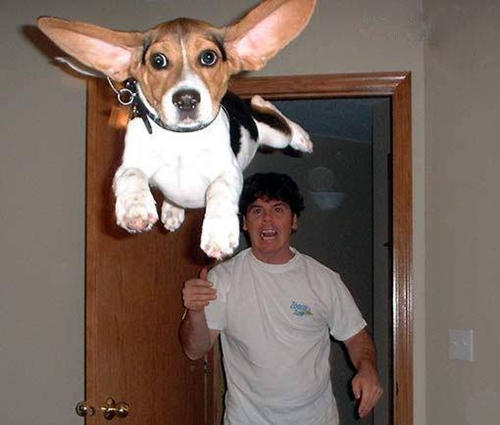

운동량이 워낙 많은 데다가 성격이 강하고 고집이 세서 충분한 운동을 시키지 않고 방치해 놓으면 말썽을 피우기 쉬운 고(高)에너지 견종들을 일컫는 말. 사람을 공격하는 맹견 개념과는 무관하다.
공적인 장소에서 지랄이란 표현을 하긴 좀 뭐해서 달리 지옥견이나 악마견이라고 불리기도 한다.
《TV동물농장》 등 지상파 방송에서 등장할 때는 '말썽견' 등으로 순화해서 내보내기도 한다.
이런 개들을 한 번이라도 기르게 된다면 몸에서 사리가 나온다는 우스갯소리도 있다.